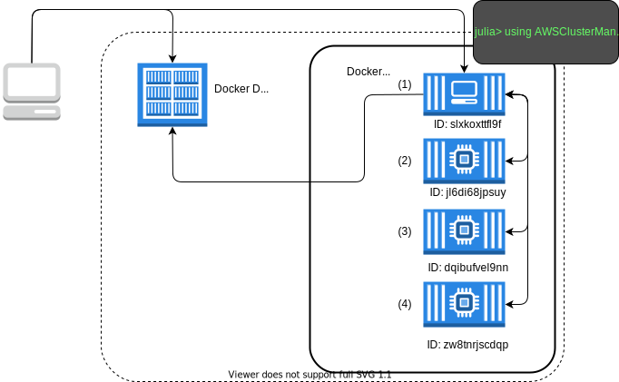

Docker
The DockerManager allows you to simulate a multi-machine julia cluster using Docker containers. In the future, worker containers could be run across multiple hosts using docker swarm, but this is currently not a supported configuration.
Requirements
- Docker
- A Docker image which has Julia, Docker andAWSClusterManagers.jl installed. A sample Dockerfile is provided in the root directory of this repository.
Usage
In order to build the AWSClusterManagers docker container you should first build the julia-baked:0.6 docker image (or pull it down from ECR). More details on getting the julia-baked:0.6 image can be found in our Dockerfiles repository.
docker build -t aws-cluster-managers-test:latest .
# Optionally tag and push the image to ECR to share with others or for use with the AWSBatchManager.
$(aws ecr get-login --region us-east-1)
docker tag aws-cluster-managers-test:latest 468665244580.dkr.ecr.us-east-1.amazonaws.com/aws-cluster-managers-test:latest
docker push 468665244580.dkr.ecr.us-east-1.amazonaws.com/aws-cluster-managers-test:latestOverview

The client machine on the left (e.g., you laptop) begins by starting an interactive docker container using the image "myproject".
docker run --network=host -v /var/run/docker.sock:/var/run/docker.sock --rm -it myproject:latest julia
_
_ _ _(_)_ | A fresh approach to technical computing
(_) | (_) (_) | Documentation: https://docs.julialang.org
_ _ _| |_ __ _ | Type "?help" for help.
| | | | | | |/ _` | |
| | |_| | | | (_| | | Version 0.6.0 (2017-06-19 13:05 UTC)
_/ |\__'_|_|_|\__'_| |
|__/ | x86_64-amazon-linux
julia>NOTE: We need to use --network=host -v /var/run/docker.sock:/var/run/docker.sock in order for the docker container to bring up worker containers.
From here we can bring up worker machines and debug our multi-machine julia code.
julia> import AWSClusterManagers: DockerManager
julia> addprocs(DockerManager(4, "myproject:latest"))
4-element Array{Int64,1}:
2
3
4
5
julia> nprocs()
5
julia> for i in workers()
println("Worker $i: ", remotecall_fetch(() -> myid(), i))
end
Worker 2: 2
Worker 3: 3
Worker 4: 4
Worker 5: 5Running the DockerManager outside of a container
It's also possible to run the DockerManager outside of a container, so long as the host docker daemon is running and you're running the same version of julia (and packages) on the host.